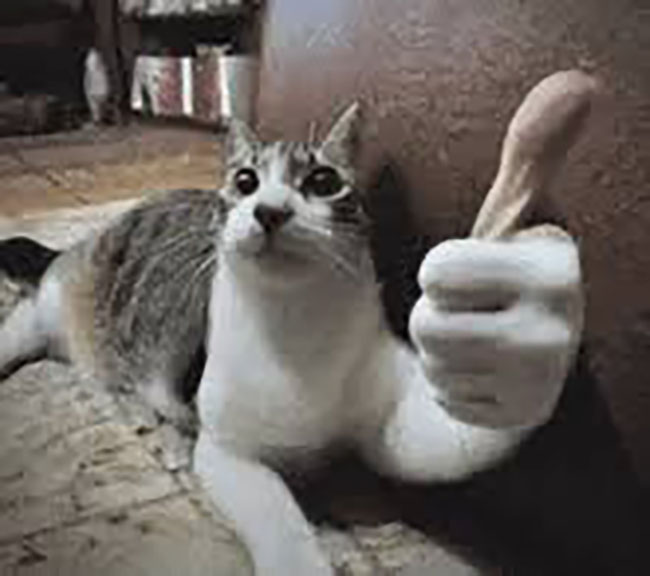

Hi! I'm Lilly. I'm a Graphic designer based in Bellingham, Washington. I'm currently a 2nd year Design student at Western Washington University
I started out as an illustrator making drawings on Procreate, and later transitioned to design to expand my horizons. I like all avenues of design but right now I've been really interested in branding, and typography. I don't have much experience with packaging but it seems like so much fun, so I might get into that as well. I'm proficient in most of the Adobe Creative suite software including Adobe Photoshop, Illustrator, and Indesign. Other than design, I'm a violinist with 16 years of experience and I perform with the Wesern Symphony Orchestra. I've enjoyed teaching myself how to bake, I'm not very good, but I'll get there. I'm a huge fan of all things studio Ghibli with my favorites being Spirited Away and Howl's moving castle, if you haven't watched them you definitly should!